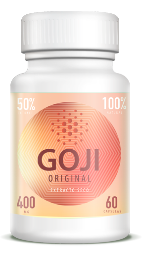

Witajcie, czytelnicy mojego bloga! Ci, którzy są z nami pierwszy raz, dopiero mnie poznają. Jestem Alicja Gołębiowska, mam 35 lat i mieszkam w Cieszynie z moim chłopakiem i dwójką dzieci z pierwszego małżeństwa. Jestem nauczycielką tańca. Wielu twierdzi, że mam szczęście, mając taką figurę. Podczas gdy inni zakładają, że jest ona wynikiem ciężkich treningów. Dziś chcę się z wami podzielić historią mojego życia i tym, jak zostałam tancerką.
sZaczęłam ścisłą dietę, jadłam tylko warzywa i owoce. Piłam dużo ciepłej wody. Spacerowałam nocami . Tłuszcz powinien znikać o tego natychmiastowo, ale z jakiegoś powodu tak się nie działo. Nie mogłam zmusić ciała do pozbycia się zbędnych kilogramów, ani ćwiczeniami, ani dietą. Dlatego, noc po nocy, w internecie rozmawiałam z innymi tłuściochami i szukałam porad. Byłam gotowa na wszystko. Podczas jednej z takich nocy mój internetowy znajomy wysłał mi prywatną wiadomość z linkiem do strony .
To był sklep sprzedający produkt odchudzający «» . Po przeczytaniu postanowiłam złożyć zamówienie. Nigdy nie próbowałam wcześniej żadnych środków, ponieważ ogólnie jestem im przeciwna, ale naturalne składniki tego środka sprawiły, że chciałam go spróbować. Gdybym tylko wiedziała, że ta decyzja odmieni moje życie...
Każdego dnia brałam zgodnie z instrukcją. Po kilku dniach zadałam sobie sprawę, że nie jestem już głodna wieczorami. Po tygodniu odczułam jak moje ciało zaczęło wspaniale działać. Zasypiałam bez problemów i budziłam się szczęśliwa. Zniknęły też obrzęki i opuchlizny. A gdy weszłam na wagę, czekała mnie wspaniała niespodzianka, schudłam 5 kilogramów ! Nie zdziwiło mnie więc, że zaczęło mi się dużo lepiej tańczyć.

Dzień po dniu, zmiany były coraz bardziej widoczne. Przestałam jeść cukierki i chciałam coraz więcej i więcej spacerować. Pewnego wieczora gdy poszłam na spacer z dziećmi usłyszałam po raz pierwszy komplement od mojego syna. Powiedział, że bardzo wyładniałam i zapytał czy się w kimś zakochałam. Ha! Nie miałam wtedy pojęcia, że jego słowa będą prorocze!
Po miesiącu nikt nie mógł mnie poznać! Udało mi się schudnąć 25 kg! Chodziłam tańczyć trzy razy w tygodniu i trenowałam z muzyką codziennie przed lustrem. Oglądanie jak moje ciało pięknieje było prawdziwą przyjemnością! A ponieważ co dzień traciłam na wadze, mój brzuch z dnia na dzień się kurczył.
Mogłam się też wreszcie zemścić. Zostałam zaproszona na koncert w szkole tańca i po raz pierwszy w życiu czułam się jak gwiazda, wirując przed dziesiątkami widzów. Po prezentacji mój partner poprosił mnie o spędzenie z nim reszty wieczoru. Nie mogłam odmówić!
Jak się pewnie domyślacie tej nocy wszystkie moje marzenia się spełniły. Byłam zdrowa i wysportowana, a moja kariera profesjonalnej tancerki właśnie się zaczynała. No i znalazłam miłość swojego życia!
Co za wspaniała historia! Zgadzam się, że ćwiczenia ani diety nie wystarczą jeśli ciało nie chce spalać tłuszczu. Dzięki Tobie wiem co zrobić z moimi wałeczkami:)
Dobrze, że się nie poddałaś! Ja bym pewnie zrezygnowała i pogodziła się z tym, że jestem gruba. Nigdy nie miałam problemów z wagą ale moja przyjaciółka ma, prześlę jej linka do Twojego bloga. Próbowała już wszystkiego, bezskutecznie!
są niesamowite! Biorę je od 2 miesięcy i rezultaty są nieziemskie, nawet bez ćwiczeń i diety!
Wiem o tym środku już od dawna ale wcześniej wątpiłam w jego skuteczność. Dzięki Tobie przekonałam się do niego i zamówiłam! Mam nadzieję, że działają na każdego!